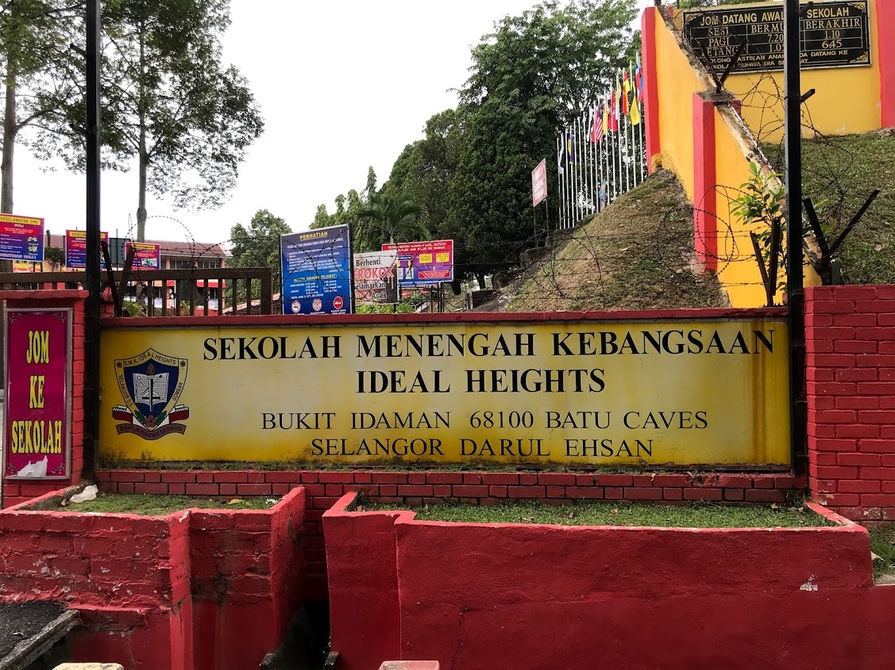
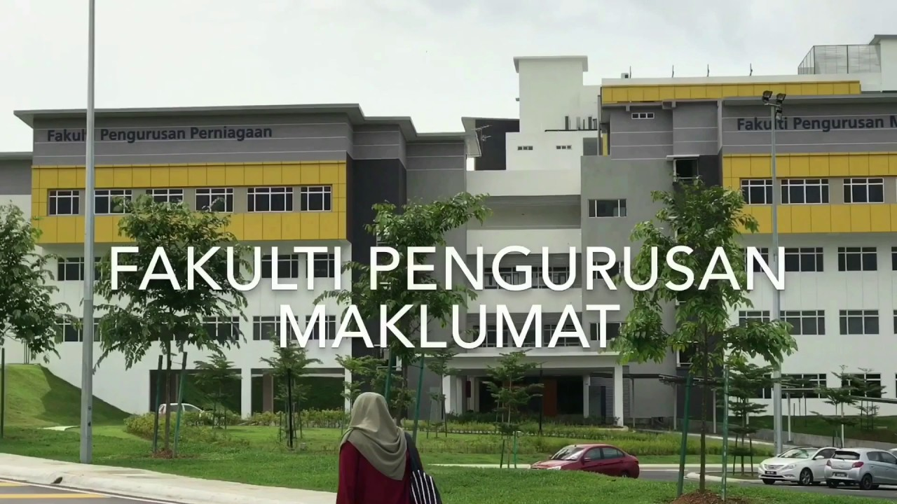

Primary School

Sekolah Kebangsaan Selayang Utama is my primary school that was located in Selayang Utama, Batu Caves. I started studying in this school from the very beginning. This is the first school where i stepped in. I got 1A4B for my UPSR result. Although, my result was not so good, i am very grateful that i made such a good friends and cherish every memories.
Secondary School
During my time in high school I had a really good moments, but my best moments that I've experienced are in a particular during my senior year, where i studied very hard to get an excellent results and reach my target for SPM. I managed to scored 3A for spm which i can enrol to my dream University in Malaysia. My secondary school's name is Sekolah Menengah Kebangsaan Ideal Heights. It is 5km from my house and I walked everyday to go and back from school
Diploma
My diploma year was the toughest yet memorable moments that has happened in my life. It is the place where I need to leave my family to further study. On entering university, there is absolutely no way I would have imagined the things I have done, the experiences I have had, the incredible people I have met, and all that I have achieved. I learned a lot of things druing my diploma year such as to be independent and boost my confidence level. I am currently in my last year with 3.85 CGPA and I hope I can graduate soon and make my parents proud.